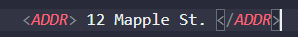

CONTEXT FREE GRAMMAR
CFG (Context Free Grammar) adalah tata bahasa yang mempunyai tujuan sama seperti halnya tata bahasa regular yaitu merupakan suatu cara untuk menunjukkan bagaimana menghasilkan suatu untai-untai dalam sebuah bahasa. CFG atau adalah tata bahasa formal di mana setiap aturan produksi adalah dalam bentuk A → B di mana A adalah pemproduksi, dan B adalah hasil produksi. Batasannya hanyalah ruas kiri adalah sebuah simbol variabel. Dan pada ruas kanan bisa berupa terminal, symbol, variable ataupun ɛ, Contoh aturan produksi yang termasuk CFG adalah seperti berikut ini:
- X → bY | Za
- Y → aY | b
- Z → bZ | ɛ
CFG perlu disederhankan dengan tujuan untuk melakukan pembatasan sehingga tidak menghasilkan pohon penurunan
yang memiliki kerumitan yang tak perlu atau aturan produksi tak berarti. Berikut merupakan langkah-langkah
dalam melakukan penyederhanaan CFG:
- Eliminasi ɛ-production
- Eliminasi unit production
- Eliminasi useless symbol
Context Free Grammars dipelajari di bidang ilmu komputer teoretis, desain penyusun, dan linguistik.
CFG digunakan untuk mendeskripsikan bahasa pemrograman dan program pengurai dalam kompiler dapat
dihasilkan secara otomatis dari tata bahasa bebas konteks. CFG dapat dijelaskan dengan tupel empat
elemen (V,Σ,R,S), dimana
- V adalah sekumpulan variabel terbatas (yang non-terminal)
- Σ adalah himpunan terbatas (disjoint dari V) simbol terminal
- R adalah sekumpulan aturan produksi di mana setiap aturan produksi memetakan variabel ke string s ∈ (V ∪ Σ)∗
- S yang merupakan simbol awal.
KEMAMPUAN CFG
Kemampuan dari Context Free Grammar terdiri dari beberapa bagian, yaitu:
- Tata bahasa bebas konteks berguna untuk mendeskripsikan sebagian besar bahasa pemrograman.
- Jika tata bahasa dirancang dengan benar maka pengurai yang efisien dapat dibangun secara otomatis.
- Dengan menggunakan fitur informasi asosiatif & prioritas, tata bahasa yang sesuai untuk ekspresi dapat dibangun.
- Tata bahasa bebas konteks mampu mendeskripsikan struktur bertingkat seperti: tanda kurung seimbang, pencocokan awal-akhir, sesuai jika-maka-lain & seterusnya.
APLIKASI PEMANFAATAN CFG
Parser
Context Free Grammars digunakan untuk mendeskripsikan bahasa pemrograman. Yang terpenting, ada cara mekanis untuk mengubah deskripsi sebagai CFG menjadi parser, komponen penyusun yang menemukan struktur program sumber dan merepresentasikan struktur itu sebagai pohon.
Sebagai contoh:
Fitur Document Type Defnition (DTD) dari Extensible Markup Language(XML) pada dasarnya
adalah CFG yang menjelaskan tag HTML yang diizinkan dan cara tag ini dapat disarangkan. Misalnya,
ada banyak aspek bahasa pemrograman tipikal yang bisa dimiliki seperti tanda kurung seimbang.
Awal dan akhir blok kode, seperti awal dan akhir Pascal, atau tanda kurung kurawal {...} dari C,
adalah contoh. Ada pola terkait yang kadang-kadang muncul, di mana "tanda kurung" bisa diseimbangkan
dengan pengecualian bahwa mungkin ada tanda kurung kiri yang tidak seimbang. Contohnya adalah perlakuan
if dan else di C. Klausa if dapat tampak tidak seimbang dengan klausa else, atau mungkin diimbangi
dengan klausa else yang cocok. Tata bahasa yang menghasilkan kemungkinan urutan if dan else
(masing-masing diwakili oleh i dan e) adalah:
S -> SS -> iS -> iSe -> λ
Misalnya, ieie, iie, dan iei adalah kemungkinan urutan if dan else dan masing-masing string ini
dihasilkan oleh grammer di atas. Beberapa contoh urutan ilegal yang tidak dibuat oleh grammer adalah, ei,
ieeii, iee.
XML & Document - Type Definition
Fakta bahwa HTML dideskripsikan dengan tata bahasa tidaklah luar biasa. pada dasarnya semua bahasa
pemrograman dapat dideskripsikan oleh CFG-nya sendiri, jadi akan lebih mengejutkan jika kita tidak bisa
mendeskripsikan HTML. namun, ketika kami melihat bahasa markup yang penting, XML (eXtensible Markup Language),
kami menemukan bahwa CFG memainkan peran yang lebih penting, sebagai bagian dari proses yang menggunakan bahasa
tersebut. tujuan XML bukan untuk mendeskripsikan format dokumen; itulah pekerjaan untuk HTML. sebaliknya, XML
mencoba mendeskripsikan "semantik" teks. misalnya, teks seperti "12 Maple St." tampak seperti sebuah alamat,
tetapi apakah? dalam XML, tag akan mengelilingi frase yang mewakili sebuah alamat; Gambarannya sebagai
berikut:

Referensi
Binus University: Penyederhanaan Context Free Grammar
Brilliant: Context Free Grammar
Eggy Iqbal: Tata Bahasa Bebas Konteks (Context Free Grammar)